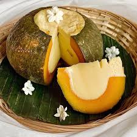
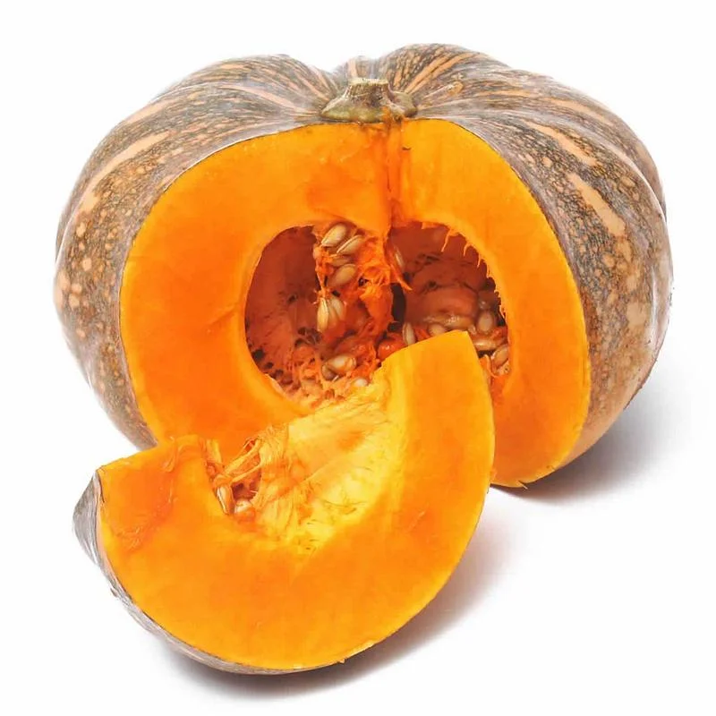
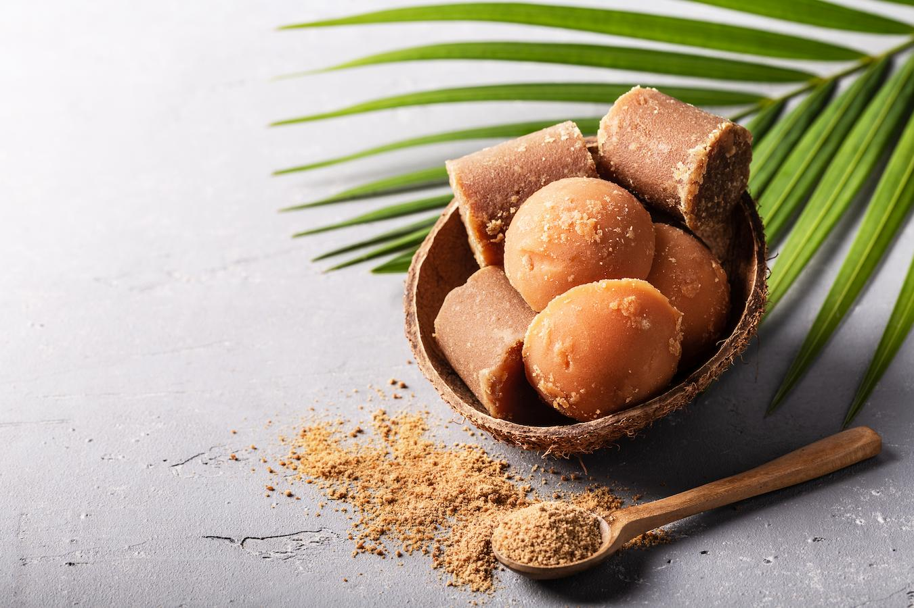
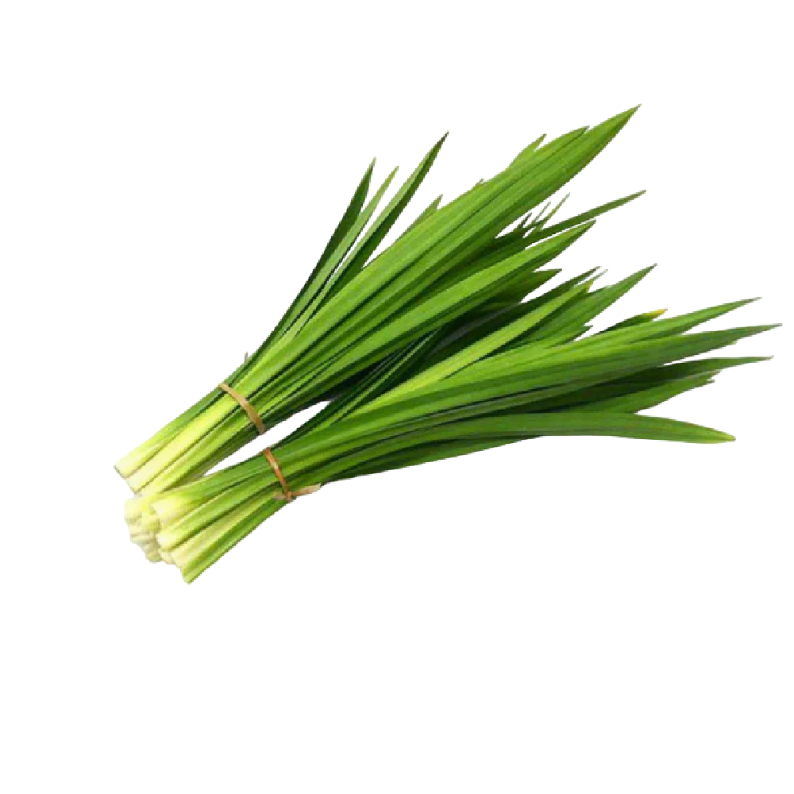
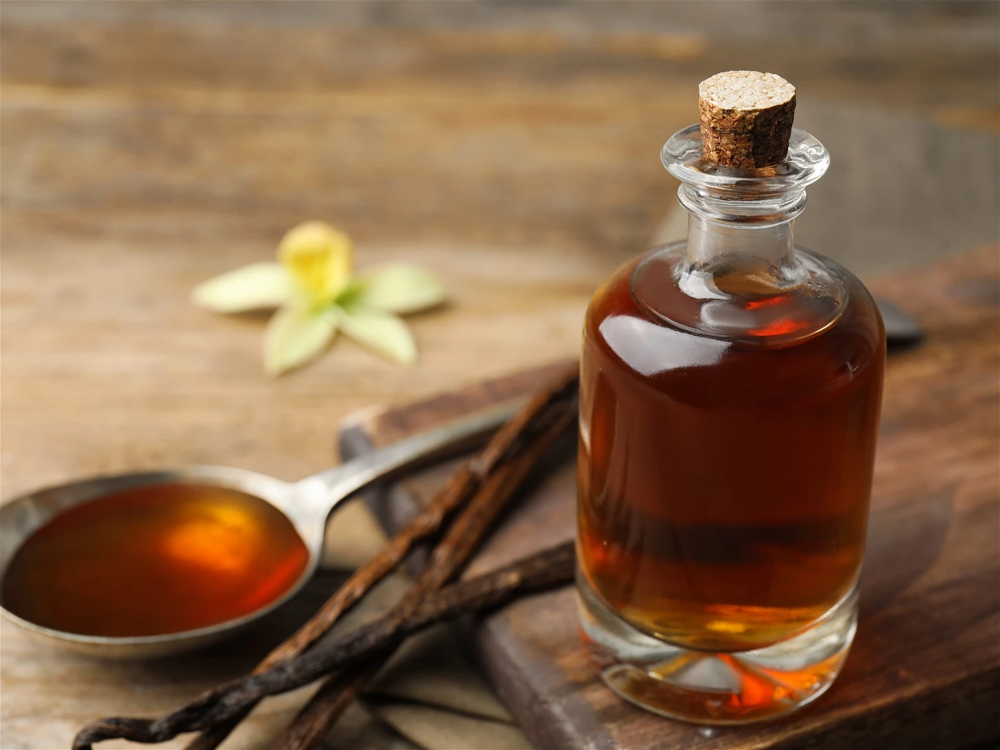

Pumkin Custard
សង់ខ្យាល្ពៅ
Num Sankhya Lapov (Khmer Pumpkin Custard) is a traditional Cambodian dessert where a whole pumpkin is hollowed out and filled with a rich, sweet coconut custard. It is then steamed until the custard is set, creating a creamy, fragrant filling inside the soft, tender pumpkin.
Calories
960 kcal (240 kcal per serving)

Pumpkin

1 medium
Buy NowCoconut Milk

400ml
Buy NowEggs

4
Buy NowPalm Sugar

100g
Buy NowPandan Leaves

2-3 leaves
Buy NowVanilla Extract

1 tsp
Buy Now-
Step 1: Prepare the pumpkin
- Wash the pumpkin thoroughly
- Cut the top to make a lid and scoop out the seeds
- Set aside the pumpkin and lid
-
Step 2: Make the custard mixture
- Mix eggs, coconut milk, and palm sugar in a bowl
- Add vanilla extract and pandan leaves for aroma
- Whisk until smooth and well combined
-
Step 3: Fill the pumpkin
- Pour the custard mixture into the hollowed pumpkin
- Place the pumpkin lid on top
-
Step 4: Steam the pumpkin
- Place the pumpkin in a steamer
- Steam for 45-60 minutes until custard is set
- Check by inserting a knife; it should come out clean
-
Step 5: Serve
- Let the pumpkin cool slightly
- Slice and serve warm or at room temperature